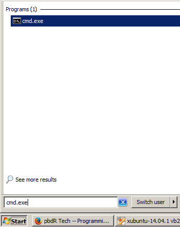
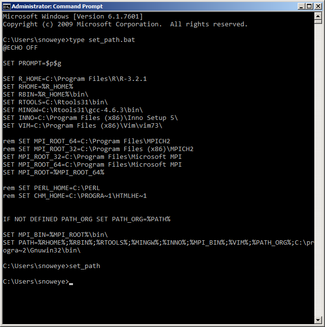
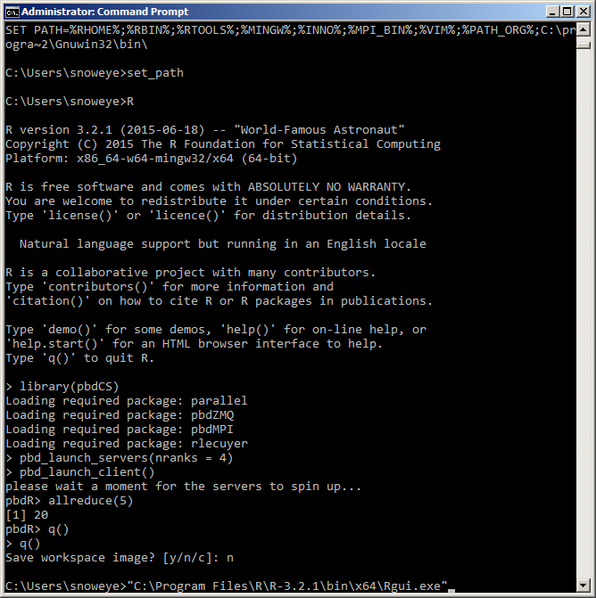
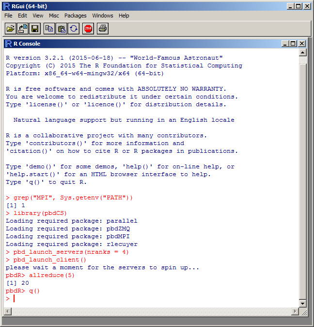

Tutorial 4 is all about two new <code>pbdR</code> packages,
<code>pbdCS</code> and <code>pbdZMQ</code>, on windows system.
The simple four steps are given in next with very brief explanations.
- <b>Step 0:</b>
Start a windows command prompt by typing <code>cmd.exe</code> to
"Start -> Search programs and files -> cmd.exe".
<table>
<tbody>
<tr class="success">
<td>
</img>
</td>
</tr>
</tbody>
</table>
- <b>Step 1:</b>
Set path to <code>R</code> and <code>MPI</code>.
<table>
<tbody>
<tr class="success">
<td>
</img>
</td>
</tr>
</tbody>
</table>
- <b>Step 2:</b>
1. Run <code>R</code> from command line.
2. Load <code>pbdCS</code> and <code>pbdZMQ</code> libraries
inside <code>R</code>.
3. Launch 4 <code>pbdR</code> servers by
<code>pbd_launch_servers(nranks = 4)</code>.
4. Launch <code>pbdR</code> client by
<code>pbd_launch_client()</code>.
5. Ask servers to do the works, such as
<code>allreduce(5)</code>.<br>
Note that there are 4 servers, so the results should be 20.
6. Run <code>Rgui.exe</code> to have a <code>R</code> GUI and go to next
<b><font color="#800000">Step 3</font></b>.
<table>
<tbody>
<tr class="success">
<td>
</img>
</td>
</tr>
</tbody>
</table>
- <b>Step 3:</b>
Do the same things as <b>Step 2</b>,
but in <code>R</code> GUI instead typing in the command line.<br>
Note that this <code>R</code> is executed from a command line with
<code>MPI</code> in the environment variable <code>PATH</code>
in order to have 4 servers run correctly.
<table>
<tbody>
<tr class="success">
<td>
</img>
</td>
</tr>
</tbody>
</table>
---
<div w3-include-html="./preamble_tail_date.html"></div>